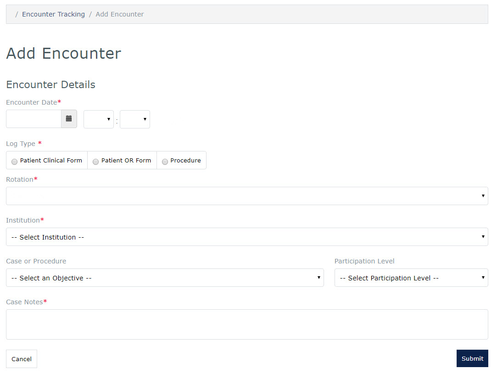

MedLearn - Logbook
Add Logbook Encounters

- Click the Clerkship tab followed by Logbook
- The Encounter Tracking Entries screen is displayed
- Click the Log Entry button, log types include:
- Patient
- Clinical Form
- OR Form
- Procedure
- Patient
- Select the Encounter Date and time
- Select the Log Type
- Select the Rotation
- Select the Institution
- Select a Case or Procedure
- Select a Participation Level (Patient Cases Only)
- Add Case Notes (Patient Cases Only)
- Press the Submit button
Edit Logbook Encounter
NOTE: Changes are allowed only to encounters in the currently enrolled rotation.
- Return to the Encounter Tracking Entries screen
- Click on the entry you wish to edit
- The Search field can be used to filter the list of encounters
- Update applicable information
- Press the Submit button